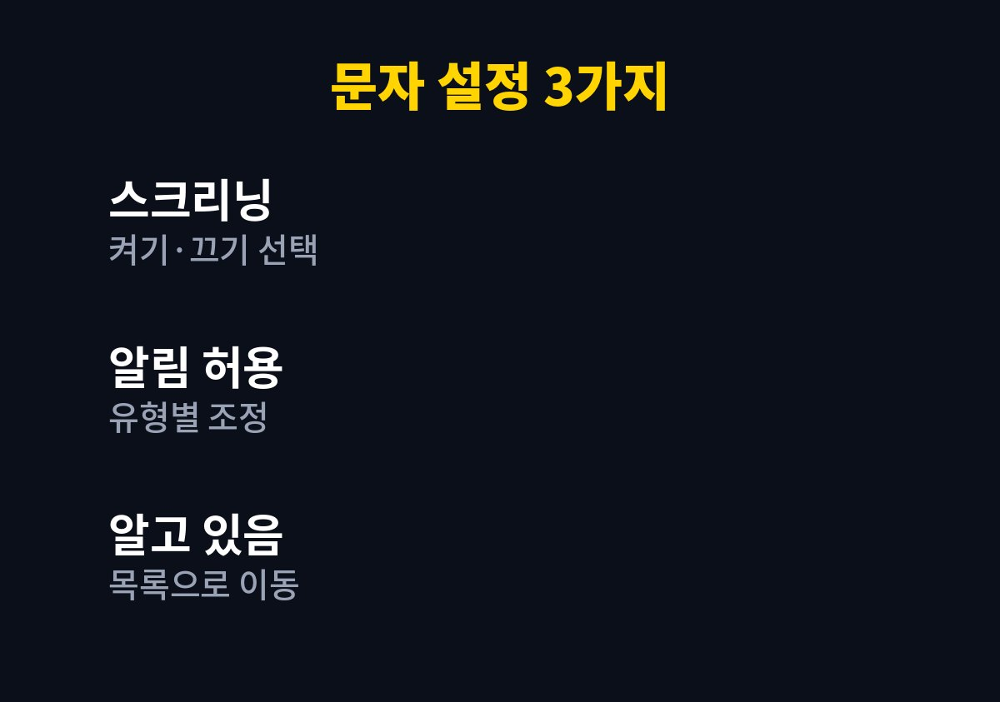
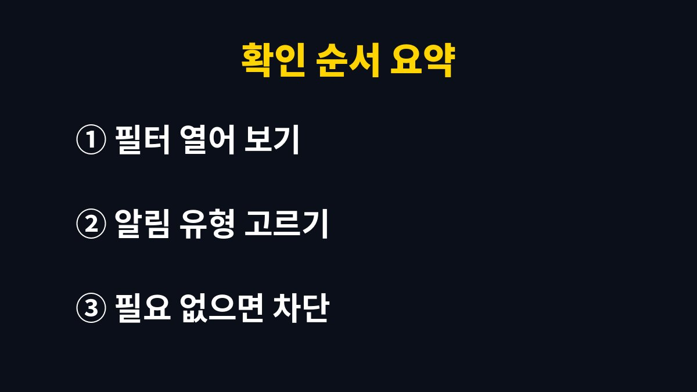

아이폰 문자가 알 수 없는 발신자 필터로 들어가 보이지 않는다면 메시지 앱의 알 수 없는 발신자 스크리닝 설정을 확인하면 된다.
iOS 26에서 이 기능은 기본적으로 꺼져 있고, iOS 18에서 켜 둔 사람은 업그레이드하면 켜진 채로 이어진다.
애플 지원 문서가 안내하는 메뉴를 기준으로 오해하기 쉬운 부분을 바로잡았다.
저장되지 않은 번호의 문자가 대화 목록에서 보이지 않으면 삭제됐다고 생각하기 쉽다.
실제로는 메시지 앱 상단의 필터 버튼 안에 알 수 없는 발신자 필터가 따로 생기고, 그곳에 모인다.
새 메시지가 있으면 그 필터에 배지가 표시된다.
대화 목록이 평소보다 조용하다고 느껴지면 필터부터 열어 본다.
메시지 앱에서 필터 버튼을 누르고 알 수 없는 발신자를 고르면 된다.
처음 한 번만 위치를 익혀 두면 이후엔 어렵지 않다.
인증번호가 오지 않는다며 재발송을 여러 번 누르기 전에 이 필터부터 열어 보면 이미 도착해 있는 경우가 있다.
은행이나 배송 앱의 인증 문자를 기다리다 시간이 지나는 상황이 대표적이다.
확인 코드, 알림, 급한 요청 같은 급한 메시지는 기본적으로 알림이 켜져 있다.
설정 > 앱 > 메시지에서 알 수 없는 발신자 항목의 알림 허용을 열면 급한 요청, 개인, 거래, 프로모션 유형을 따로 고를 수 있다.
알림을 허용한 메시지는 8시간 동안 대화 목록에 나타나고 그 뒤에 알 수 없는 발신자 영역으로 옮겨진다.
대부분의 국가와 지역에서는 알 수 없는 발신자의 알림이 기본으로 켜져 있다.
미국, 브라질, 인도에서는 알림받을 유형을 직접 고르는 방식이다.
예를 들어 배송 기사 번호는 저장되어 있지 않아 문자도 필터로 들어가고, 알림 유형을 거래로 켜 두지 않았다면 도착 알림을 놓칠 수 있다.
이런 경우에는 유형별 알림에서 거래를 켜 두는 것으로 해결된다.
광고성 문자까지 알림을 받고 싶지 않다면 프로모션만 끄면 된다.
알 수 없는 발신자에게 답장해도 그 번호가 알고 있음으로 표시되지는 않고, 대화도 목록으로 옮겨지지 않는다.
대화를 목록에 두려면 알 수 없는 발신자 필터에서 해당 대화를 열고 알고 있음으로 표시를 눌러야 한다.
한편 세 번 이상 답장을 보낸 발신자에게는 필터링이 적용되지 않는다.
가족이나 직장 동료처럼 계속 연락하는 사람은 한 번 알고 있음으로 표시해 두는 편이 편하다.
반대로 한 번 받고 말 배송·예약 문자는 굳이 표시하지 않아도 된다.
| 하고 싶은 일 | 메뉴 경로 | ||||||||||||||||||||||||||||||||||
|---|---|---|---|---|---|---|---|---|---|---|---|---|---|---|---|---|---|---|---|---|---|---|---|---|---|---|---|---|---|---|---|---|---|---|---|
| 스크리닝 켜기·끄기 | 설정 > 앱 > 메시지 > 알 수 없는 발신자 | ||||||||||||||||||||||||||||||||||
| 또는 메시지 앱에서 | 필터 버튼 > 필터링 관리 | ||||||||||||||||||||||||||||||||||
| 유형별 알림 조정 | 알 수 없는 발신자 > 알림 허용 | ||||||||||||||||||||||||||||||||||
| 거래·프로모션 문자 거르기 | 필터링 관리 > 문자 메시지 필터링 | ||||||||||||||||||||||||||||||||||
| 스 | 크 | 리 | 닝 | 을 | 끄 | 면 | 이 | 필 | 터 | 에 | 모 | 이 | 던 | 문 | 자 | 도 | 일 | 반 | 목 | 록 | 으 | 로 | 돌 | 아 | 온 | 다 | . |

메뉴 이름은 iOS 버전에 따라 조금씩 다르다.
표의 경로가 보이지 않으면 메시지 앱 안의 필터 버튼에서 필터링 관리로 들어가면 같은 설정이 나온다.
아래 순서는 인증번호를 놓친 적이 있는 사람을 기준으로 짰다.

다섯 번째 단계의 차단과 신고는 문자 하단의 안내가 아니라 대화 화면에서 진행한다.
링크가 포함된 문자는 필터에 있더라도 누르지 말고 지운다.
스크리닝은 편한 만큼 중요한 문자를 늦게 보게 만들 수도 있다.
인증번호를 자주 쓰는 사람은 스크리닝을 끄는 쪽이 오히려 단순하다.
이번 주에는 알 수 없는 발신자 필터를 한 번 열어 안에 쌓인 문자가 무엇인지 보는 것부터 하면 된다.
참고 자료: 애플 지원 「iPhone의 메시지 앱에서 알 수 없는 발신자가 보낸 대화 보기」(2026년 11월 확인)
※ 2026년 기준 공식 안내를 바탕으로 정리한 글이며, 기기·앱 버전에 따라 메뉴 이름이 다를 수 있다.